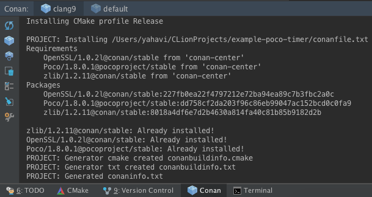
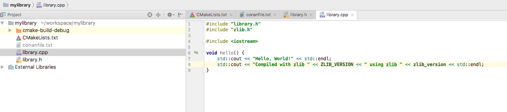

CLion
CLion
There is an official Jetbrains plugin Conan plugin for CLion.

You can read how to use it in the following blog post
General Integration
CLion uses CMake as the build system of projects, so you can use the CMake generator to manage your requirements in your CLion project.
Just include the conanbuildinfo.cmake this way:
if(EXISTS ${CMAKE_BINARY_DIR}/conanbuildinfo.cmake)
include(${CMAKE_BINARY_DIR}/conanbuildinfo.cmake)
conan_basic_setup()
else()
message(WARNING "The file conanbuildinfo.cmake doesn't exist, you have to run conan install first")
endif()
If the conanbuildinfo.cmake file is not found, it will print a warning message in the Messages console of your CLion IDE.
Using packages in a CLion project
Let see an example of how to consume Conan packages in a CLion project. We are going to require and use
the zlib conan package.
Create a new CLion project

Edit the
CMakeLists.txtfile and add the following lines:
if(EXISTS ${CMAKE_BINARY_DIR}/conanbuildinfo.cmake)
include(${CMAKE_BINARY_DIR}/conanbuildinfo.cmake)
conan_basic_setup()
else()
message(WARNING "The file conanbuildinfo.cmake doesn't exist, you have to run conan install first")
endif()

3. CLion will reload your CMake project and you will be able to see a Warning in the console, because the
conanbuildinfo.cmake file still doesn’t exist:

4. Create a conanfile.txt with all your requirements and use the cmake generator. In this case we only
require the zlib library from a Conan package:
[requires]
zlib/1.2.11
[generators]
cmake

5. Now you can run conan install for debug in the cmake-build-debug folder to install your requirements and
generate the conanbuildinfo.cmake file there:
$ conan install . -s build_type=Debug --install-folder=cmake-build-debug
6. Repeat the last step if you have the release build types configured in your CLion IDE, but change the build_type setting accordingly:
$ conan install . -s build_type=Release --install-folder=cmake-build-release
Now reconfigure your CLion project. The Warning message is not shown anymore:

8. Open the library.cpp file and include zlib.h. If you follow the link, you can see that CLion automatically
detects the zlib.h header file from the local Conan cache.

Build your project normally using your CLion IDE:

You can check a complete example of a CLion project reusing conan packages in this github repository: lasote/clion-conan-consumer.
Creating Conan packages in a CLion project
Now we are going to see how to create a Conan package from the previous library.
Create a new CLion project
Edit the
CMakeLists.txtfile and add the following lines:
if(EXISTS ${CMAKE_BINARY_DIR}/conanbuildinfo.cmake)
include(${CMAKE_BINARY_DIR}/conanbuildinfo.cmake)
conan_basic_setup()
else()
message(WARNING "The file conanbuildinfo.cmake doesn't exist, you have to run conan install first")
endif()
Create a
conanfile.pyfile. It’s recommended to use the conan new command.
$ conan new mylibrary/1.0@myuser/channel
Edit the conanfile.py:
We are removing the
sourcemethod because we have the sources in the same project; so we can use theexports_sources.In the
package_infomethod, adjust the library name. In this case ourCMakeLists.txtcreates a target library calledmylibrary.Adjust the CMake helper in the
build()method. Thecmake.configure()doesn’t need to specify thesource_folder, because we have thelibrary.*files in the root directory.Adjust the
copyfunction calls in thepackagemethod to ensure that all your headers and libraries are copied to the Conan package.
from conans import ConanFile, CMake, tools
class MylibraryConan(ConanFile):
name = "mylibrary"
version = "1.0"
license = "<Put the package license here>"
url = "<Package recipe repository url here, for issues about the package>"
description = "<Description of Mylibrary here>"
settings = "os", "compiler", "build_type", "arch"
options = {"shared": [True, False]}
default_options = {"shared": False}
generators = "cmake"
requires = "zlib/1.2.11"
def build(self):
cmake = CMake(self)
cmake.configure()
cmake.build()
# Explicit way:
# self.run('cmake "%s" %s' % (self.source_folder, cmake.command_line))
# self.run("cmake --build . %s" % cmake.build_config)
def package(self):
self.copy("*.h", dst="include", src="hello")
self.copy("*.lib", dst="lib", keep_path=False)
self.copy("*.dll", dst="bin", keep_path=False)
self.copy("*.so", dst="lib", keep_path=False)
self.copy("*.dylib", dst="lib", keep_path=False)
self.copy("*.a", dst="lib", keep_path=False)
def package_info(self):
self.cpp_info.libs = ["mylibrary"]
To build your library with CLion, follow the guide of Using packages from step 5.
5. To package your library, use the conan export-pkg command passing the used build-folder. It
will call your package() method to extract the artifacts and push the Conan package to the local
cache:
$ conan export-pkg . mylibrary/1.0@myuser/channel --build-folder cmake-build-debug -pr=myprofile
Now you can upload it to a Conan server if needed:
$ conan upload mylibrary/1.0@myuser/channel # This will upload only the recipe, use --all to upload all the generated binary packages.
8. If you would like to see how the package looks like before exporting it to the local cache (conan export-pkg) you can use the conan package command to create the package in a local directory:
$ conan package . --build-folder cmake-build-debug --package-folder=mypackage
If we list the mypackage folder we can see:
A
libfolder containing our libraryA
includefolder containing our header filesA
conaninfo.txtandconanmanifest.txtconan files, always present in all packages.
You can check a full example of a CLion project for creating a Conan package in this github repository: lasote/clion-conan-package.